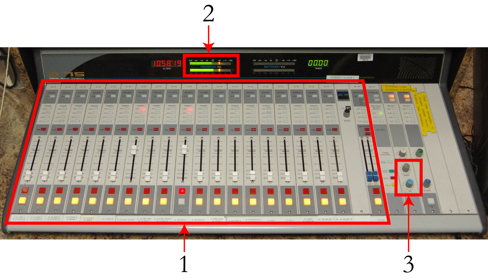
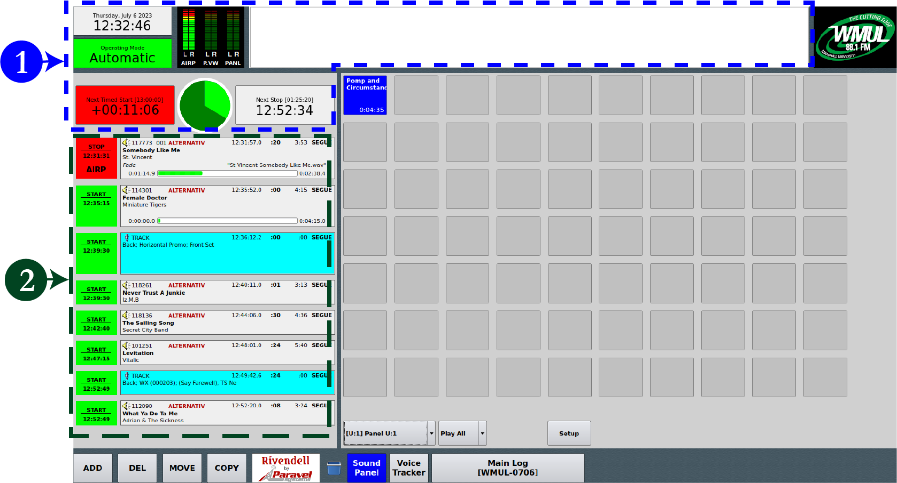
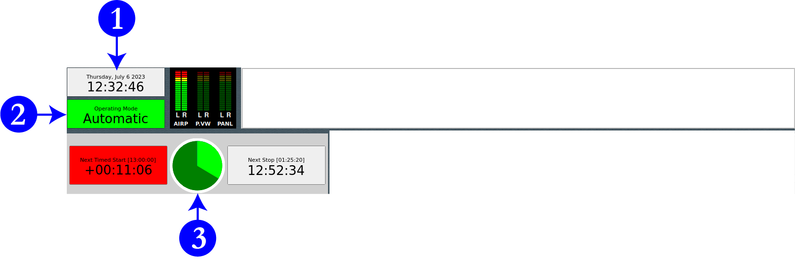
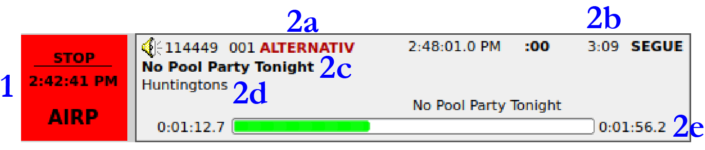
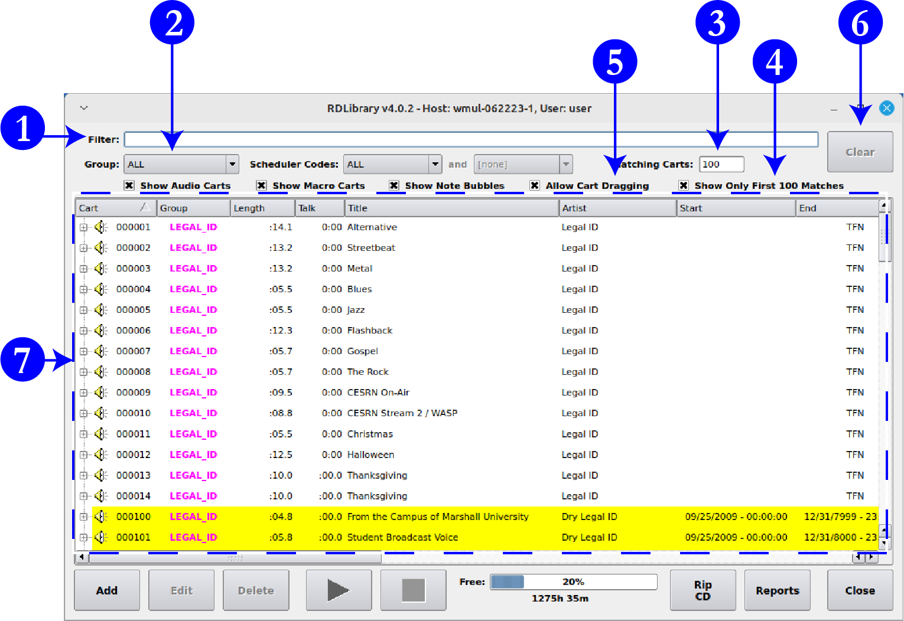

7.B. Introduction to the Equipment
7.B.1. AudioArts D-75 Audio Console (Briefly)
The AudioArts D-75 console is the wide two-tone gray device with all the slide-faders, lights, and buttons. The audio console is covered in more detail later. 9.A. AudioArts D-75 Audio Console on Page 47 in Volume II

Use the faders (1) to control the audio levels of everything played on-air. The two faders you will likely use for your first DJ shift are the microphone and the computer playback system. The main DJ microphone is labeled "CR Mic Front". It is the seventh (7th) fader from the left. The computer is labeled "RIVDELL 1". It is the tenth (10th) fader from the left.
You can control the volume of the speakers and headphones with two knobs on the right-hand side of the console (3). The knob for the speakers is labeled "CR" and the knob for the headphones is labeled "HDPN".
The VU meters (2) on the top of the console show the level of the audio going through the console. Adjust the faders up or down to keep the meters between -16 and 0 on the top scale.
7.B.2. On-Air Microphone
The microphone is the announcer’s tool. Professionals know about different mic types, how they work, and most of all, how to talk into a mic for maximum effect and impact. Do not worry about all this yet. At WMUL‑FM your job will be to turn the mic on and off so when you want your voice to go out over the air, it will and when you do not want your voice to go out over the air, it will not. Other skills will come to you as you get more experience.
The on-air microphone is controlled by channel #7 on the D-75 console. Make certain that when you do speak you have the mic potted up to a level that shows between -16 and 0 on the VU meters. If you have never opened this mic before, start at the shaded gray mark(-12) on the fader. Once you begin using this mic, you will discover your correct level.
7.B.2.a. How to Operate the Microphone
Here is the best way to turn the microphone on so you can speak.
-
Put your headphones on near the end of the programming (song, PSA, etc.) after which you will be talking. Make certain the headphone volume knob on the right side of the D-75 console is turned up. It usually needs to be slightly louder than your normal listening volume. You want to make certain that it is loud enough for you to hear yourself through the headphones and not through your skull.
-
Make certain the yellow off button under channel #7 is illuminated and that the fader is all the way down at -∞ (minus infinity).
-
The mic is still off, so clear your throat now! Do this every time and you will not get phlegm in your throat while you are on the air.
-
Just before the end of the programming, press the red on button under channel #7. The monitor speakers will automatically mute, so do not worry if you cannot hear the speakers. This is why you have on the headphones.
-
As the programming ends, slide fader #7 up to the level at which you usually work. If you forget the number, slide the fader to the shaded gray mark (-12). The microphone is live as soon as you begin fading it up.
-
Say what you want to say, then begin the next piece of programming.
-
As the programming begins, slide fader #7 all the way down. Press the yellow off button under channel #7.
Starting the mic at the -∞ position prevents an annoying rush of noise from the studio environment that would occur if the channel were already faded up when channel was turned on.
7.B.3. Computer Playback (Automation) — Briefly
The majority of the recorded audio played over WMUL‑FM plays through the computer automation system. The system WMUL‑FM uses is called "Rivendell Radio Automation" or just "Rivendell".
This section introduces you to the computer playback. The instructions here are a quick introduction to the major parts you will need for your first DJ shift. Complete instructions are in Volume III — Computer Playback (Automation). Everything written in this section is repeated in 14. Computer Playback (Automation) — On-Air Operations on Page 3 in Volume III. You will not miss anything if you decide to skip this section and go straight to part 14.
The instructions for off-air operations, such as ingesting new audio and creating special logs are in parts 16. RD Log Edit on Page 59 in Volume III, 17. RD Library (Managing) on Page 77 in Volume III, and 18. Ingesting New Audio with Adobe Audition on Page 101 in Volume III.
|
When On-Air or on the phone, never refer to the computer as "the automation". Say "computer", "computer player", or "music library". When you say the word "automation", people hear "This is a six month old recording from three states away". |
7.B.3.a. RD AirPlay
Most of the audio played through Rivendell plays through RD AirPlay. This module plays the songs from the log. Songs from RD AirPlay play through the "RIVDEL 1" channel on the board.

-
Top Bar: contains seven (7) widgets that describe the state of the log and of the song that is currently playing.
-
Button Log: shows the currently playing playing song (or the next scheduled song if the log is stopped), and the next six (6) to ten (10) songs. A button allows each song to be started and stopped.

The top bar has seven (7) widgets that describe the state of the log and the song that is playing. Three will be covered here: (1) Wall Clock, (2) Mode Indicator Button, and (3) Pie Wedge.
-
Wall Clock: Displays the current date and time in 12-hour format.
-
Mode Indicator Button: This widget displays the current automation mode. Click it to toggle among the modes. The three modes are "Automatic", "Manual", and "LiveAssist".
-
Automatic: In this mode, the system will keep playing until it hits a "Stop" transition.
-
Manual: In this mode, the system will stop after each song plays. It will remain stopped until you manually start another song.
-
Live Assist: WMUL‑FM does not use this mode.
-
-
Pie Wedge: Displays a pie chart showing the amount of time remaining in the song. The time elapsed will be colored bright green and the time remaining will be colored dark green.
The Button Log widget takes up the left side of the window. It consists of several rows displaying the current song (or the next scheduled song when the log is stopped), and the next six (6) to ten (10) songs.
Each row of the button log has a start button to the left (1) and cart label (2) to the right.

Cart Label (2) Items:
-
Group
-
Duration
-
Song Title
-
Artist
-
Time Remaining
7.B.3.b. RD Library
RD Library allows you to search and manage the library of carts. You can search for a specific song or just browse everything within a particular group or by a particular artist.

-
Filter Bar: Type here to search the library.
-
Groups Box: Use this box to search a particular Rivendell group or all groups.
-
Matching Carts: Displays a count of how many carts match the search. It will max out at 100 if "Show Only First 100 Matches" (4) is checked.
-
Show Only First 100 Matches: When this box is checked, RD Library will show only the first 100 matches. Checked is the default state for this control. It is recommended to keep this checked, because the search is greatly slowed down when this box is unchecked.
-
Allow Cart Dragging: Whether or not to allow carts to be dragged-and-dropped from RD Library into other modules such as RD AirPlay. Keep this checked.
-
Clear: Clears the "Filter" field, while leaving all other search options alone.
-
Search Results: All the carts that match the search entered into the search fields.
7.B.3.c. Searching within RD Library
The library will match text in the search bar against artist, title, and several other metadata fields. The search results include partial and full matches in any of those fields.
Searching for "Queen" returns the artists "Queen", "Queensryche", and "Queens of the Stone Age", as well as the song "Dancing Queen", and many others.
While it is not possible to search just within a specific meta-data field, you may narrow the search to a specific group using the Group (2) field.
7.B.3.d. Editing the Log
|
In the beginning, follow this guideline when editing the log: Every time you add a song to the log, delete another song from the log. Following this guideline will help keep your program well scheduled. |
7.B.3.e. Adding Songs to the Log
-
Use RD Library to find the song you want.
-
Make certain "Allow Cart Dragging" is checked in RD Library.
-
Select the song in RD Library.
-
Drag and drop it onto a cart label in the Button Log in RD AirPlay.
-
The newly selected song will be inserted in that location. The song that you dropped it onto will be pushed down.
7.B.3.f. Removing Songs from the Log
-
Click the "Del" button. The button will begin blinking purple, the start buttons in the Button Log will turn purple and display "Delete?".
-
To delete a song from the Button Log, click the "Delete?" button. That song will be deleted and the "Del" button will return to its normal light gray.
7.B.3.g. Moving Songs in the Log
-
Click the "Move" button. The button will begin blinking purple and the start buttons in the Button Log will turn purple and display "Move?".
-
To select a song from the Button Log, click its purple "Move?" button.
-
The "Move" button will begin blinking yellow, the start buttons in the Button Log will turn yellow and display "To?".
-
To insert the song in the Button Log, click the "To?" button of a song. The song will be inserted in that location. The song that you clicked on will be pushed down.
7.B.3.h. The Full Log Widget
The Full Log widget on the right-hand side allows the user to view and edit the log. Part 14 in Volume III covers the Full Log completely. For now, just know that you can scroll through the log and see the songs that have played earlier and the songs that are scheduled later.
7.B.4. Music Selections for Webcasting
|
The station must not play, within a three-hour period, more than three selections by the same artist, and not more than two in a row. |
The above policy is to comply with federal restrictions on the musical selections made by webcast stations such as WMUL‑FM.
Use the Full Log widget to look at the hours before and after your program. Make certain that the artists you select will not cause WMUL‑FM to violate the above rule. The computer will not prevent you from making this error. It is up to you to be aware of the artists that have played and the artists that are scheduled.
See 4.B.2. 'Sound Recording Performance Complement' Policy on Page 78 of Volume I for complete details.
7.B.5. What to do if a song in the computer contains questionable material.
An ingestion clerk may occasionally miss something. If that happens, this is what to do.
-
Skip to the next song. Do not draw attention to the event by apologizing.
-
Get in contact with the music director and let that person know what happened. If the music director is unavailable, contact any other director.
-
If you cannot reach any director:
-
Copy the song from the computer and put it in the music director’s folder on the Z: drive. Give it a name that includes the words "DO NOT AIR" in all caps. See 17.E.3. Exporting a Cut to a File on Page 95 in Volume III.
-
Delete the song from the computer playback system so it cannot be played again until the music director reviews it. 17.E.6. Removing Audio on Page 97 of Volume III
-
If you play a song that has been marked as clean, whether from the computer playback system or a CD, you are not at fault provided you follow the steps above.